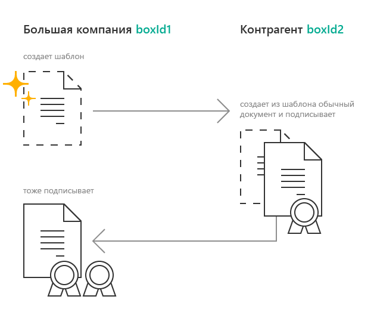
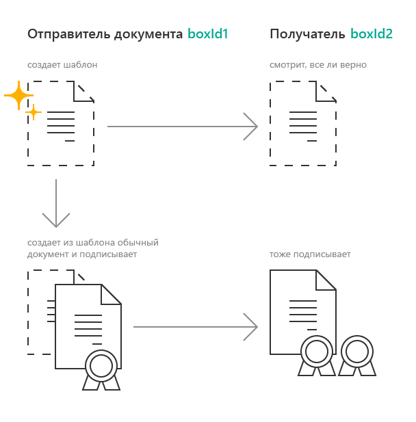
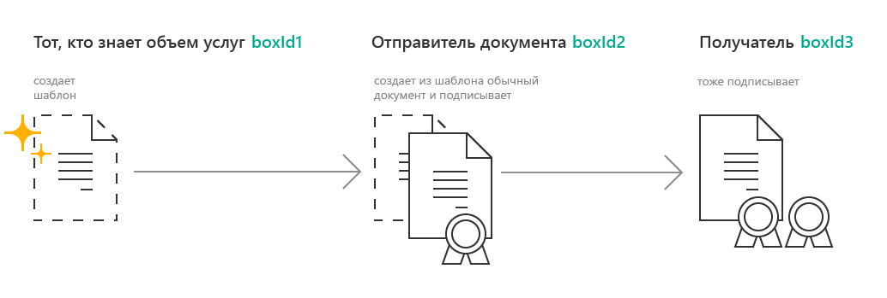

Документооборот шаблонов¶
Шаблон — это предзаполненный документ, не имеющий юридической силы, который можно отправить контрагенту без подписи.
Сценарии использования шаблонов¶
У получателя документа есть определенные требования к этому документу. Получатель может сам создать шаблон документа, удовлетворяющего этим требованиям, и передать этот шаблон отправителю документа. Отправитель создаст документ на основе шаблона и отправит его получателю. Так получателю придет документ, который удовлетворяет его требованиям.
У получателя документов много контрагентов. Получатель хочет уменьшить количество ошибок во входящих документах. Он может создать шаблон и отправить его контрагентам. Так получатель будет уверен, что получит от контрагентов документы без ошибок.
Отправитель документа хочет показать документ получателю до его подписания. Он может создать шаблон и отправить его получателю для ознакомления. Когда получатель подтвердит, что документ соответствует его ожиданиям, отправитель создаст документ из шаблона и отправит его получателю.
Отправитель документа не знает, как должен выглядеть отправляемый документ. Он просит третью сторону подготовить для него шаблон документа, который нужно отправить получателю. Третья сторона готовит шаблон и передает его отправителю. Отправитель создает из шаблона документ и отправляет получателю.
Возможности и ограничения шаблонов¶
Из шаблона можно создать юридически значимый документ любого типа.
Шаблоны можно связать в пакет, в том числе в закрытый. Шаблоны из закрытого пакета могут быть обработаны только вместе. Документы, созданные из шаблонов в закрытом пакете, будут отправлены в пакете, состав которого изменить нельзя.
Шаблоны могут быть одноразовыми и многоразовыми. На основе одноразового шаблона можно создать только один документ, на основе многоразового — неограниченное количество документов.
В шаблоне можно указать настройки будущего документа: запрос подписи, данные о документе и т.д.
Шаблоны могут быть редактируемыми, то есть их настройки можно будет изменить перед отправкой.
Функционал шаблонов недоступен по умолчанию. Чтобы получить возможность отправлять шаблоны, обратитесь к вашему менеджеру или в техническую поддержку.
Действия с шаблонами¶
Организации могут производить с шаблонами следующие действия.
- Отправитель шаблона может:
- Получатель шаблона может:
Отправка шаблона¶
Отправить шаблон можно с помощью метода PostTemplate. В метод передается структура TemplateToPost, содержащая сведения об отправляемом шаблоне.
Структура TemplateToPost содержит список документов TemplateDocumentAttachment, которые отправляются в шаблоне.
Получатель шаблона может отклонить документ из шаблона. Чтобы запретить отклонение, установите значение свойства RefusalDisabled = true структуре TemplateDocumentAttachment.
Чтобы создать многоразовый шаблон, установите значение свойства IsReusable = true в структуре TemplateToPost.
Чтобы создать редактируемый шаблон, установите настройки редактирования.
Организация, которая сможет создать документ из шаблона, указывается при отправке шаблона в поле MessageFromBoxId структуры TemplateToPost.
Ниже перечислены примеры заполнения значений ящиков в структуре TemplateToPost в зависимости от схемы использования шаблона.
Схемы использования шаблонов¶
1. Документ готовит получатель
В этой схеме получатель документа подготавливает его за отправителя.

Организация boxId1 создает шаблон и отправляет его организации boxId2.
Организация boxId2 получает шаблон, создает из него документ и отправляет его организации boxId1.
Организация boxId1, которая отправила шаблон, получает от организации boxId2 входящий документ, созданный из этого шаблона.
Чтобы отправить документ по этой схеме, идентификаторы ящиков в структуре TemplateToPost нужно заполнить так:
"FromBoxId": "boxId1", "ToBoxId": "boxId2", "MessageFromBoxId": "boxId2", "MessageToBoxId": "boxId1"
2. Предварительный просмотр документа
В этой схеме шаблон используется для предварительного просмотра документа будущим получателем.

Организация boxId1 создает шаблон и отправляет его организации boxId2.
Организация boxId2 получает шаблон и знакомится с его содержимым.
Организация boxId1, которая создала шаблон, теперь создает документ из этого шаблона и отправляет его организации boxId2.
Организация boxId2 получает документ, созданный из шаблона, с которым ознакомилась ранее.
Чтобы отправить документ по этой схеме, идентификаторы ящиков в структуре TemplateToPost нужно заполнить так:
"FromBoxId": "boxId1", "ToBoxId": "boxId2", "MessageFromBoxId": "boxId1", "MessageToBoxId": "boxId2"
3. Документ готовит третья сторона
В этой схеме документ подготавливает сторона, не участвующая в юридически значимом документообороте. Получатель документа не имеет доступа к шаблону. Шаблон согласовывают между собой две организации, документ получает третья организация.

Организация boxId1 создает шаблон и отправляет ее организации boxId2.
Организация boxId2 получает шаблон, создает из него документ и отправляет его организации boxId3.
Организация boxId3 получает документ, но не имеет доступа к шаблону, из которого он был создан.
Чтобы отправить документ по этой схеме, идентификаторы ящиков в структуре TemplateToPost нужно заполнить так:
"FromBoxId": "boxId1", "ToBoxId": "boxId2", "MessageFromBoxId": "boxId2", "MessageToBoxId": "boxId3"
Редактируемые шаблоны¶
Чтобы отправить шаблон документа, который можно будет отредактировать перед отправкой, используйте настройки редактирования. Шаблон с настройками редактирования будет называться редактируемым шаблоном.
Настройки редактирования «ослабляют» требования к документу и позволяют отправить в шаблоне документ с незаполненными полями. Незаполнены могут быть даже обязательные поля формализованного документа, например, номер документа. Документ из такого шаблона нужно будет дозаполнить перед отправкой.
Кроме этого настройки редактирования позволяют отправить шаблон документа с заполенными полями, которые можно будет отредактировать перед отправкой.
В Диадоке доступна отправка редактируемых шаблонов для следующих типов документов и настроек:
Тип документа |
Редактируемые поля |
|---|---|
УПД |
|
Приложение к УПД |
|
Показания электроэнергии |
|
Поручение экспедитору |
|
Заявка на перевозку |
|
Заявка на оказание транспортно- экспеиционных услуг |
|
Чтобы создать редактируемый шаблон, укажите в поле EditingSettingId структуры TemplateDocumentAttachment значение идентификатора настройки редактирования. Для получения идентификатора настройки редактирования обратитесь к вашему менеджеру или в техническую поддержку.
Получение шаблонов и событий¶
Получить шаблон по идентификаторам можно с помощью метода GetMessage.
Получить события по шаблонам можно с помощью методов:
Создание документа из шаблона¶
Создать документ из шаблона можно с помощью метода TransformTemplateToMessage.
Важно
Создать документ может только организация, ящик которой указан в поле MessageFromBoxId структуры TemplateToPost при отправке шаблона.
Если шаблон имеет настройки редактирования, то созданный из него документ необходимо дозаполнить. Чтобы заполнить документ, отправьте патч c типом EditingPatches.
Созданный документ можно найти среди исходящих неподписанных документов.
Узнать, из какого шаблона был создан документ, можно с помощью свойства Origin в структуре Document.
Нельзя массово подписать и отправить документы, созданные из шаблонов с настройками редактирования.
Отзыв и отклонение шаблона¶
Отправитель может отозвать шаблон после отправки. После отзыва получатель шаблона не сможет создать документ из шаблона, отклонить шаблон или отправить документы, созданные из шаблона до его отзыва.
Получатель может отклонить входящий шаблон, если он не согласен с шаблоном и не готов формировать и подписывать документ из этого шаблона. Отклонить шаблон можно только в случае, если отклонение не запрещено отправителем шаблона.
Эти действия можно осуществить с помощью метода PostTemplatePatch.
Другие действия¶
Удаление шаблона — метод Delete.
Восстановление шаблона — метод Restore.
Перемещение шаблонов — метод MoveDocuments.
Все остальные действия для шаблонов недоступны.